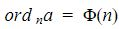
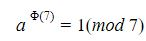

DEFINICIÓN
Si  entonces a es una raíz primitiva módulo n.
Adaptación de (Jiménez, L., Gordillo, J., y Rubiano, G., 2004: 176)[1].
¿Qué nos indica esta definición?
De esta definición y con base en los temas anteriores podemos ver que la expresión denota que  donde la función
phi es el número de coprimos que posee el número n, es decir la cantidad de números
tales que máximo común divisor sea 1.
donde la función
phi es el número de coprimos que posee el número n, es decir la cantidad de números
tales que máximo común divisor sea 1.
Veamos un ejemplo con el que podremos comprobar otra afirmación acerca de las raices
primitivas que no menciona que:
Sea p un número primo, entonces existen phi de p-1 raíces primitivas módulo p.
Adaptación de (Jiménez et al., 2004: 176)[1].
Ejemplo 1
Hallar las raíces primitivas módulo 5.

Explicación...
Tenemos que hallar todos los valores donde a elevado a la función phi de euler de 5 sea
congruente con 1 (mod 5), es decir donde a elevado a la función phi de 5 restandole - 1
sea igual a 5 k, donde k pertence a los enteros .
Comenzamos hallando phi de 5, número que se halla recurriendo a una de las propiedades
de la función phi de euler:
Sea p un número primo, entonces:
Hallamos los coprimos de 5, es decir los números tales que (a,5)=1, ya sabemos gracias a
la función phi que esta cantidad deben ser 4.
Los 4 números que tienen de máximo común divisor entre ellos y 5 son [1,2,3,4] por lo
que procedemos a realizar la tabla de restos potencias de a dondea es los
coprimos.
Necesitamos hallar los valores de a donde a elevada a la 4 sea congruente con 1(mod
5), Se obtiene el resultado de que los valores que cumplen esa condición son 2 y
3.
En el caso del ejercicio anterior obtuvimos 2 raíces por lo que corroboramos la
afirmación realizada ya que phi de 4 es 2.
Fuente: Autor
Teorema potencias incongruentes módulo p
Conociendo una raíz primitiva módulo p, donde p es primo podemos hallar las potencias m-ésimas módulo p mediante el uso del siguiente teorema.
Ejemplo 2
Determinar las potencias cuartas módulo 7.

Explicación...
Comenzamos hallando una raíz primitiva módulo 7.
Se deben hallar todos los valores de a tales que 
al ser 7 un número primo aplicando una de las propiedades de la función phi de euler
mencionada anteriormente se tendrá que 7 posee 6 coprimos, en este caso los coprimos
son:
Hallamos los coprimos de 5, es decir los números tales que (a,5)=1, ya sabemos gracias a
la función phi que esta cantidad deben ser 4.
Los 4 números que tienen de máximo común divisor entre ellos y 5 son [1,2,3,4] por lo
que procedemos a realizar la tabla de restos potencias de a dondea es los
coprimos.
Adaptación de (Jiménez et al., 2004: 179)[1].
Referencias
[1] Jiménez, L., Gordillo, J., y Rubiano, G. (2004). Teoría de números para principiantes (2a. ed.). Bogotá: Universidad Nacional de Colombia